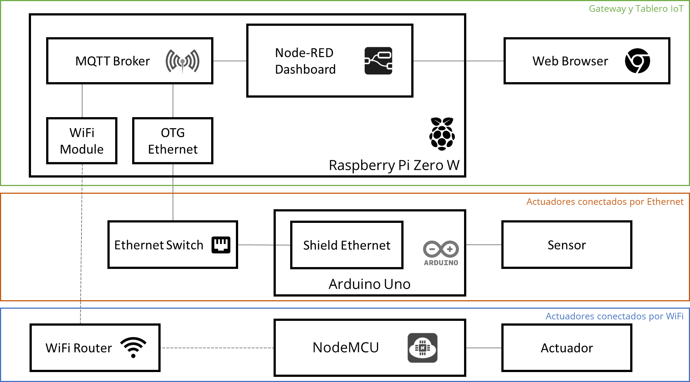
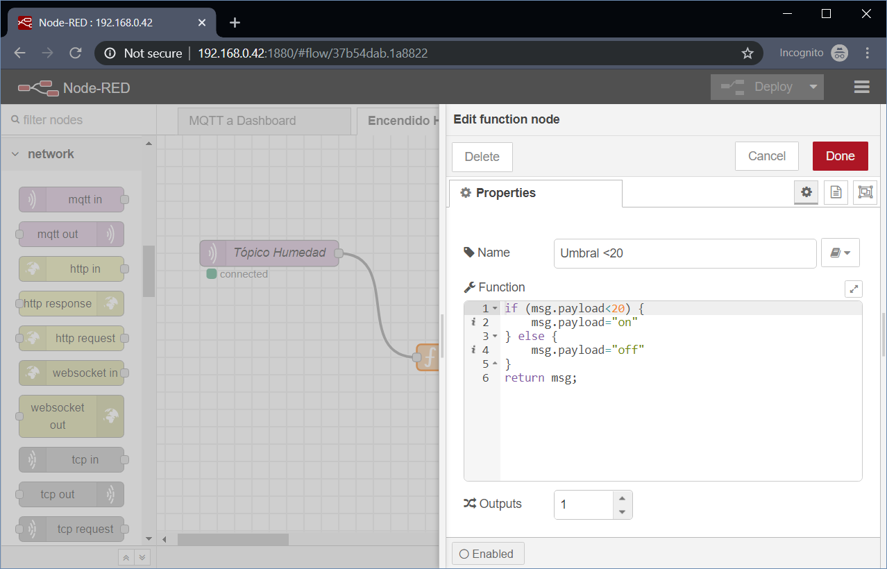
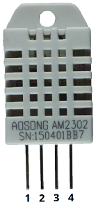
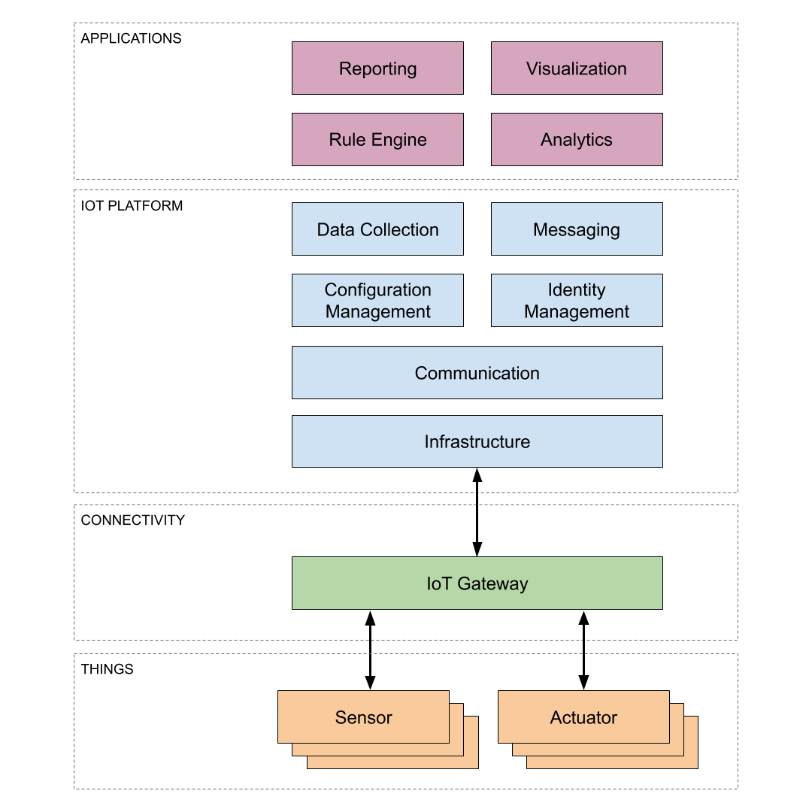
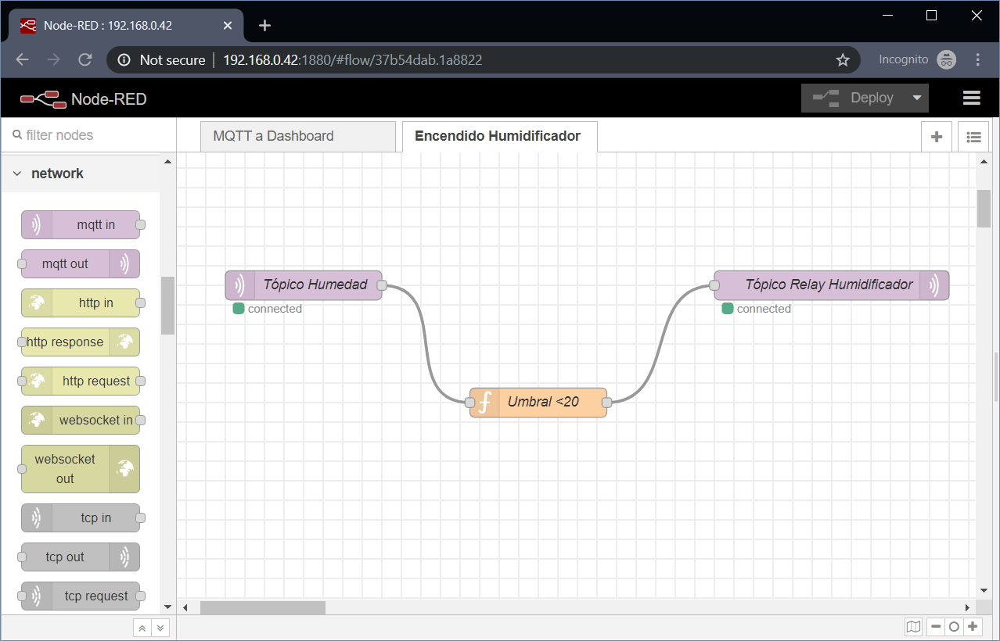
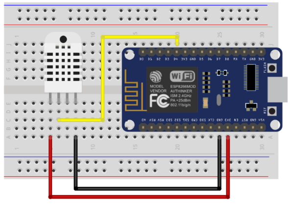
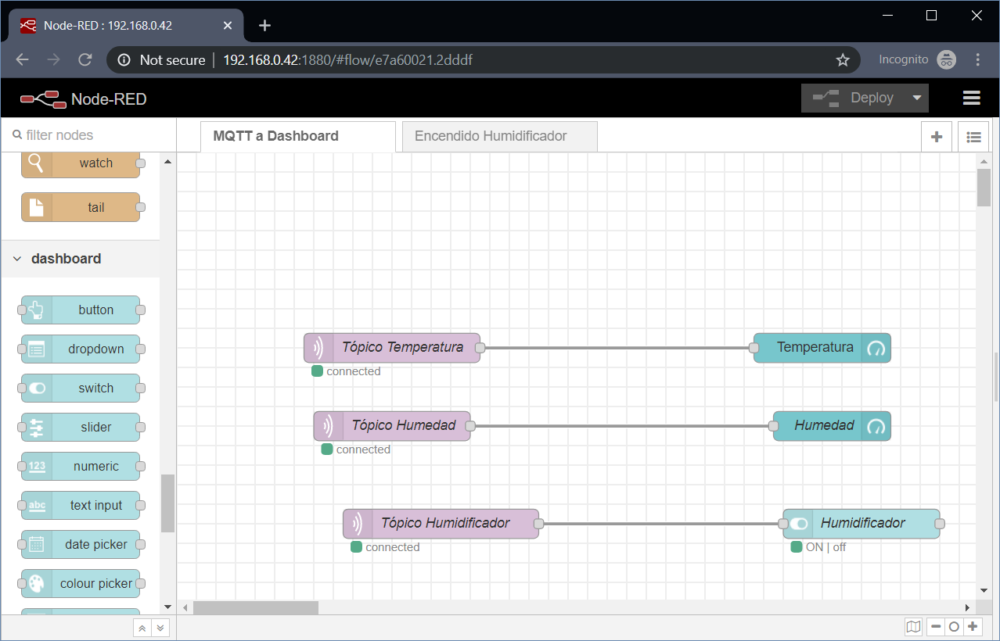
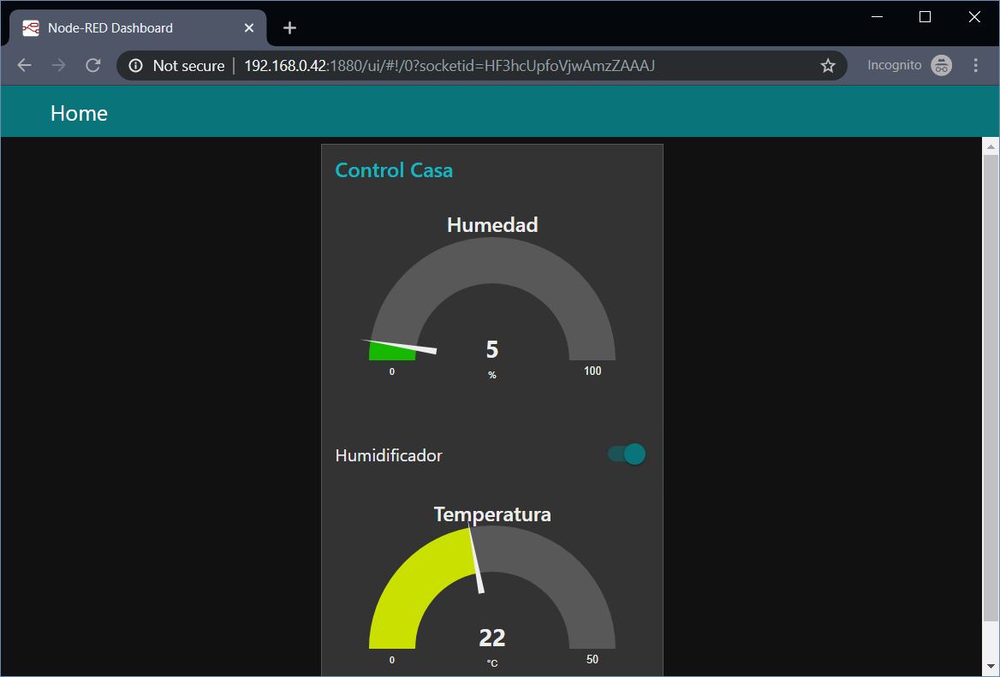
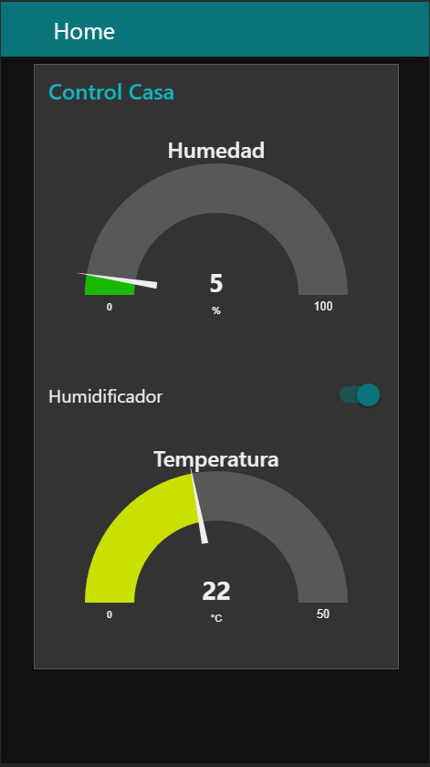
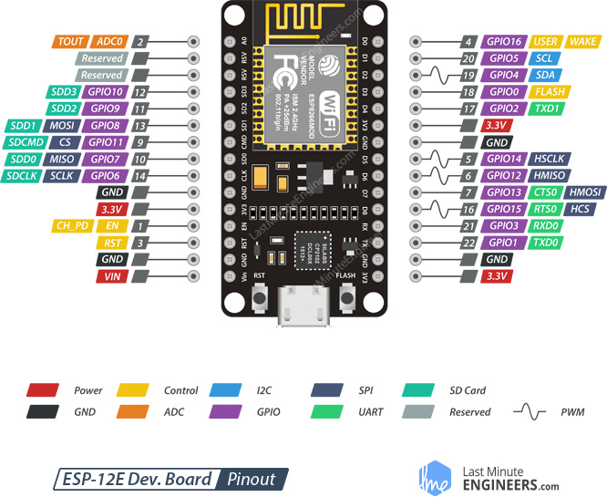

Project Documentation Hub Centro de Documentación de Proyecto
PoCIoT Gateway on a Raspberry Pi
Gateway de IoT en una Raspberry Pi
Welcome to the complete documentation hub. This project analyzes and demonstrates the protocol stack needed to implement a local, secure, and responsive domotic central (IoT Gateway) utilizing a Raspberry Pi Zero W and ESP8266 Microcontrollers. Bienvenido al centro de documentación completo. Este proyecto analiza y demuestra la pila de protocolos necesarios para implementar una central domótica local, segura y responsiva (Gateway IoT) utilizando una Raspberry Pi Zero W y microcontroladores ESP8266.
General Solution Schematic Esquema General de la Solución
Click on the diagram below to expand the complete structural architecture showing both wired Ethernet connections (Arduino Uno + Ethernet shield) and wireless nodes (NodeMCU ESP8266) feeding into the Raspberry Pi Gateway. Haga clic en el siguiente diagrama para expandir la arquitectura estructural completa que muestra las conexiones cableadas por Ethernet (Arduino Uno + escudo Ethernet) y los nodos inalámbricos (NodeMCU ESP8266) enviando datos al Gateway Raspberry Pi.

Comparative Overview: DHT11 vs. DHT22 Sensors Resumen Comparativo: Sensores DHT11 vs. DHT22
| SpecificationEspecificación | DHT11 | DHT22 (AM2302) |
|---|---|---|
| Temperature RangeRango de Temperatura | 0 to 50 ºC | -40 to 80 ºC |
| Humidity RangeRango de Humedad | 20 to 90% RH | 0 to 100% RH |
| AccuracyPrecisión | ±2 ºC / ±5% | ±0.5 ºC / ±2% |
| Sampling IntervalIntervalo de Lectura | 1 s | 2 s (lower power consumption) |
Technical Thesis: Domotic Control Central (ES) Trabajo Final Integrador: Central de Control Domótico
Full academic report submitted by Jorge Enrique Nicolau detailing the design, hardware, protocols, and implementation of a domestic home automation central. Reporte académico completo presentado por Jorge Enrique Nicolau detallando el diseño, hardware, protocolos e implantación de una central domótica de automatización del hogar.
Trabajo Final Integrador
Alumno: Jorge Enrique NICOLAU (jenicolau@gmail.com)
Solución Propuesta: Central de Control Domótico
Empresa o industria a aplicar: Control electrónico de dispositivos caseros.
Objetivo del trabajo: Describir una solución de uso doméstico, sus componentes, tecnología, mapa de solución e implementación a alto nivel. La plataforma de control domótico de dispositivos de iluminación contará con administración vía Web y vía móvil tanto para monitoreo de sensores como para utilización de activadores; además contará con un módulo de de programación de artefactos y simulación de presencia.
Ámbito de aplicación de la solución WiFi y Ethernet: Control Domótico en base a la información recolectada por sensores ambientales y Simulación de Presencia.
1. Descripción de Componentes de la Solución
Sensores a utilizar:
- Temperatura y Humedad (Sensor DHT22): De los sensores más comunes de uso más extendido con Arduino están los sensores DHT11 y DHT22; se eligió este último por su mejor rango de medición tanto de temperatura (0 a 50 ºC el DHT11 vs -40 a 80 ºC el DHT22) como de humedad (20 a 90% del DHT11 vs 0 a 100% del DHT22); además tiene la ventaja de consumir menos energía ya que el DHT22 envía lecturas cada 2 segundos contra 1 segundo del DHT11. Por último, para un nivel de precio no muy distinto (USD 1 a 5 del DHT11 vs USD 4 a 10 DHT22) el DHT22 (+/-0.5ºC y +/-2% de humedad) es más preciso que el DHT11 (+/-2 ºC y +/-5% de humedad).
- Fotoeléctrico (Sensor basado en LDR y comparador LM393): Generalmente implementado como un módulo de detección de un fotorresistor y comparador de voltaje en un chip para conexión a Arduino.
Actuadores a utilizar:
- Relés (Módulo con relé SONGLE): Normalmente implementado en un módulo de un canal a 5V compatible con el conexionado de Arduino, se selecciona este módulo dada su capacidad de carga a controlar (hasta 10A 250VAC).
Protocolos a utilizar:
- MQTT: Utilizado para la conexión lógica de dispositivos IoT con el Broker.
- HTTP: Utilizado para la conexión de la interfaz de usuario final con Node-RED para la composición del Dashboard.
- WiFi: Utilizado para la conexión de placas inalámbricas con el Broker MQTT.
- Ethernet: Utilizado para la conexión de placas cableadas con el Broker MQTT.
Gateway MQTT & Interfaces Gráficas:
- Gateway MQTT: Broker en la red local implementado con una Raspberry Pi Zero W tanto con interfaz Ethernet (OTG Ethernet) como WiFi (onboard en el Pi Zero W). El software de broker se implementa mediante Mosquitto MQTT Server.
- Interfaces Gráficas y Dashboards: El dashboard se implementa mediante una instalación local de Node-RED Dashboard, también funcionando sobre la Raspberry Pi Zero W.
2. Descripción Funcional General de la Solución
La solución consiste en una central domótica orientada al control de la iluminación y simulación de presencia. Consiste en dos tipos básicos de transductores:
- Los actuadores son placas con módulo relé compatible con Arduino conectado a una placa NodeMCU ESP8266 (específicamente el board ESP8266 12E NodeMCU basado en el MCU ESP8266) si son inalámbricos o un Arduino Uno con shield Ethernet si están “cableados” a la LAN.
- Los sensores son placas con módulo de sensor fotoeléctrico compatible con Arduino conectado a una placa Arduino Nano conectado a una placa NodeMCU si son inalámbricos o un Arduino Uno con shield Ethernet si están conectados a la LAN. También hay una versión que conecta un sensor de temperatura y humedad a la placa Arduino o NodeMCU.
Los dos tipos de placa tienen en el microcontrolador una rutina que implementa un cliente de MQTT. Para el caso de la placa actuadora está leyendo a intervalos regulares su correspondiente tópico de estado en el broker MQTT y reacciona abriendo o cerrando el relé en función del valor leído. Para el caso de la placa con el sensor, está escribiendo a intervalos regulares sus lecturas del sensor fotovoltaico o de valores de temperatura y de humedad ambiente en su correspondiente tópico en el broker MQTT.
Por ser dispositivos hogareños, la alimentación de las placas está dada por fuentes adaptadoras de 220V AC a 5V CC.
La “central” de este esquema domótico está implementada por una Raspberry Pi Zero W que implementa un Broker MQTT, un servidor Node-RED y un backend con cliente MQTT (incorporado en Node-RED). La parte del servicio del broker del gateway Raspberry es el que se encarga de publicar en los tópicos de los sensores y distribuir en los tópicos de los actuadores. La parte del servidor Node-RED publica una aplicación web responsiva de modo de poder ser accedida tanto por clientes PC como clientes móviles con una interfaz de usuario adaptativa. Toda la lógica de control e interfaz de backend está implementada mediante Node-RED.
Caso de Uso Típico (Sensor/Actuador): Un caso típico es el sensor de humedad que reporta el valor en un tópico en el que también está suscrito un actuador de relé que tiene conectado un humidificador. La relación de activación por umbral se implementa en Node-RED conectando un nodo MQTT In, un nodo Función (con la lógica) y un nodo MQTT Out de la siguiente manera:

Y dentro de la función simplemente se evalúa si activar o no el humidificador (el valor de humedad leído se recibe en msg.payload, se evalúa y se retransmite hacia el nodo de salida):

3. Esquemático de Arquitectura General de la Solución
El diagrama general de despliegue de la solución, simplificado a un actuador inalámbrico, un sensor conectado por LAN, el broker local, las interfaces de usuario y el motor de reglas de Node-RED:
Se diferencian tres sectores principales:
- Los actuadores conectados al Gateway por WiFi: Implementan la pila tecnológica basada en NodeMCU ESP8266.
- Los actuadores conectados al Gateway por Ethernet: Implementan la pila tecnológica basada en Arduino Uno con Shield Ethernet.
- Gateway y Tablero IoT: Raspberry Pi Zero W ejecutando Mosquitto (Broker MQTT local) y Node-RED.
4. Ejemplo de Arquitectura Detallada de la Solución
En esta sección se describe el esquema detallado de bajo nivel para la conexión física del sensor de temperatura y humedad DHT22 a la placa inalámbrica NodeMCU ESP8266, y el firmware correspondiente en C++.
4.1. Conexión del Sensor DHT22 al NodeMCU ESP8266
El conexionado físico del sensor y del simulador de actuador (un diodo LED rojo) se realiza de la siguiente manera:

Correlación de pines entre el sensor DHT22, el diodo LED y el NodeMCU ESP8266 (ESP-12E):



| Pin DHT22 | Pin ESP12-E NodeMCU v3 | Descripción |
|---|---|---|
| VDD (1) | 3V3 | Alimentación del sensor mediante la salida regulada de 3.3V en placa. |
| DATA (2) | 17-GPIO2-TXD1 (o pin configurado) | Transmisión serial de datos digitales de humedad y temperatura. |
| GND (4) | GND | Conexión a tierra común. |
Este módulo NodeMCU está alimentado por una fuente adaptadora de 220V CA a 5V CC conectada directamente a su puerto micro USB.
4.2. Rutina del NodeMCU para la lectura del DHT22 y cliente MQTT
El programa del microcontrolador realiza la lectura del sensor DHT22, establece la conexión a la red Wi-Fi y mantiene un cliente MQTT para leer y escribir en los tópicos correspondientes:
// Rutina MCU para ESP8266, lectura DHT22 y escritura con MQTT
#include "DHT.h" // Bibliotecas con funciones de acceso al sensor DHT22
#include <PubSubClient.h> // Bibliotecas con funciones que implementan MQTT
#include <ESP8266WiFi.h> // Bibliotecas con funciones de conexión a WiFi
const char* ssid = "********"; // En la implementación, el nombre de la WiFi
const char* password = "********"; // En la implementación, el password de la WiFi
char* topicTemp = "/casa/temperatura"; // Tópico en el que va a escribir la temperatura
char* topicHum = "/casa/humedad"; // Tópico en el que va a escribir la humedad
char* server = "XX.XX.XX.XX"; // Server MQTT--aquí va la IP del Raspberry Pi Zero W
char* hellotopic = "hello_topic"; // Tópico de Prueba
#define DHTPIN 17 // En cuál PIN está conectado (GPIO2)
#define DHTTYPE DHT22 // DHT 22 (AM2302); código interno de DHT
#define REPORT_INTERVAL 30 // reporta la temperatura cada 30 segundos
String clientName;
DHT dht(DHTPIN, DHTTYPE, 15);
WiFiClient wifiClient;
PubSubClient client(server, 1883, callback, wifiClient);
float oldH;
float oldT;
void setup() {
Serial.begin(38400);
Serial.println("Inicialización DHT");
delay(20);
Serial.println();
Serial.println();
Serial.print("Conectando a ");
Serial.println(ssid);
WiFi.mode(WIFI_STA);
WiFi.begin(ssid, password);
while (WiFi.status() != WL_CONNECTED) {
delay(500);
Serial.print(".");
}
Serial.println("");
Serial.println("WiFi Conectado");
Serial.println("Dirección IP: ");
Serial.println(WiFi.localIP());
clientName += "esp8266-";
uint8_t mac[6];
WiFi.macAddress(mac);
clientName += macToStr(mac);
clientName += "-";
clientName += String(micros() & 0xff, 16);
Serial.print("Conectando a ");
Serial.print(server);
Serial.print(" como ");
Serial.println(clientName);
if (client.connect((char*) clientName.c_str())) {
Serial.println("Conectado al Broker MQTT");
Serial.print("El tópico es: ");
Serial.println(hellotopic);
if (client.publish(hellotopic, "hello from ESP8266")) {
Serial.println("Publicado OK");
} else {
Serial.println("Falló Publicación");
}
} else {
Serial.println("Falló conexión a MQTT");
Serial.println("Se resetea y prueba de nuevo...");
abort();
}
dht.begin();
oldH = -1;
oldT = -1;
}
void loop() {
float h = dht.readHumidity();
float t = dht.readTemperature();
if (isnan(h) || isnan(t)) {
Serial.println("¡Falla al leer del sensor DHT!");
return;
}
Serial.print("Humedad: ");
Serial.print(h);
Serial.print(" % ");
Serial.print("Temperatura: ");
Serial.print(t);
Serial.println(" *C ");
String payloadH = String(h);
String payloadT = String(t);
if (t != oldT || h != oldH ) {
sendTemperature(payloadH, payloadT);
oldT = t;
oldH = h;
}
int cnt = REPORT_INTERVAL;
while (cnt--) {
delay(1000);
}
}
void sendTemperature(String plHum, String plTem) {
if (!client.connected()) {
if (client.connect((char*) clientName.c_str())) {
Serial.println("Conectado nuevamente a Broker MQTT");
Serial.print("Los tópicos son: ");
Serial.print(topicTemp);
Serial.print(" y ");
Serial.println(topicHum);
} else {
Serial.println("Falló conexión a MQTT");
Serial.println("Se resetea y prueba de nuevo...");
abort();
}
}
if (client.connected()) {
Serial.print("Enviando lectura al server: Humedad ");
Serial.println(plHum);
if (client.publish(topicHum, (char*) plHum.c_str())) {
Serial.println("Publicada Humedad OK");
} else {
Serial.println("Falló publicación Humedad");
}
Serial.print("Enviando lectura al server: Temperatura ");
Serial.println(plTem);
if (client.publish(topicTemp, (char*) plTem.c_str())) {
Serial.println("Publicada Temperatura OK");
} else {
Serial.println("Falló publicación Temperatura");
}
}
}
void callback(char* topic, byte* payload, unsigned int length) {
// handle message arrived
}
String macToStr(const uint8_t* mac) {
String result;
for (int i = 0; i < 6; ++i) {
result += String(mac[i], 16);
if (i < 5) result += ':';
}
return result;
}5. Implantación del Mosquitto MQTT en el Raspberry Pi Zero W
En el servidor Raspberry Pi se debe automatizar la inicialización de Mosquitto en las rutinas de inicio de Raspbian. Para comprobar el funcionamiento local de Mosquitto podemos iniciar una sesión SSH y utilizar los comandos CLI correspondientes:
1. Terminal de Suscripción (Escucha):
mosquitto_sub -d -t hello_topic2. Terminal de Publicación (Envío):
mosquitto_pub –d –t hello_topic –m "hello from RaspberryPi"Al publicar el mensaje, la ventana de suscripción visualizará en tiempo real: "hello from RaspberryPi".
6. Implantación del Dashboard en Node-RED en el Raspberry Pi
Se utiliza Node-RED para implementar el flujo de lectura/publicación de tópicos de control y visualizaciones del estado. Node-RED define los flujos de servicios y proporciona interfaces de usuario responsivas que se actualizan en tiempo real.
Definición del flujo de lectura de tópicos de variables ambientales y actuador:

Vistas finales responsivas del tablero:

7. Observaciones, Conclusiones y Necesidad de Mejora
Esta solución está planteada como una prueba de concepto (PoC) de la instalación de todos los componentes involucrados en una implementación de IoT, desde el sensor hasta el usuario final, eligiendo explícitamente no delegar tareas a plataformas en la nube para comprobar el funcionamiento de cada capa.
Para una versión productiva o comercial, es aconsejable utilizar brokers, repositorios de datos y motores de visualización en la nube (ej. AWS IoT, Google Cloud IoT, Azure IoT Hub) para mejorar redundancia, escalabilidad y disponibilidad, además de simplificar las tareas de seguridad en redes expuestas a internet.
El conexionado físico actual se monta sobre breadboards de desarrollo rápido. En un despliegue real, se debería mandar a fabricar placas de circuito impreso (PCB) dedicadas para minimizar el empaquetamiento y optimizar el consumo de energía, permitiendo el uso autónomo con baterías que reporten su nivel de carga para mantenimiento predictivo.
Finalmente, la solución podría expandirse con un módulo histórico de almacenamiento de datos ambientales, abriendo las puertas para análisis estadísticos y algoritmos predictivos basados en herramientas de Ciencia de Datos (Data Science).
Referencias y Notas al Pie
- Digital-output relative humidity & temperature sensor/module DHT22 (AM2302) Datasheet: Sparkfun DHT22.pdf
- Complete Guide for DHT11/DHT22 Humidity and Temperature Sensor with Arduino: RandomNerdTutorials Guide
- LMx93-N, LM2903-N Low-Power, Low-Offset Voltage, Dual Comparators: Texas Instruments LM2903-N.pdf
- Photoresistor sensor module light detector for Arduino: BuildCircuit Guide
- SONGLE Relay Datasheet: SRD-05VDC-SL-C-Datasheet.pdf
- Módulo Relé 1 Canal 5V para Arduino: Mr. Watt Tienda
- Raspberry Pi Zero W: Raspberry Pi Products
- Plugable USB 2.0 OTG Micro-B to 10/100 Ethernet Adapter: Plugable OTG Card
- Eclipse Mosquitto. An open source MQTT broker: Mosquitto.org
- Node-RED Dashboard Nodes: Node-RED Dashboard Plugin
- NodeMCU Open-Source Firmware: NodeMCU.com
- Insight Into ESP8266 NodeMCU Arduino Tutorial: LastMinuteEngineers Tutorial
- Arduino Uno Rev3: Arduino Uno Rev3 Store
- Arduino Ethernet Shield 2: Arduino Ethernet Shield Store
- Arduino Client for MQTT: PubSubClient.net
- Adafruit MQTT Library: Adafruit GitHub
- Cayenne MQTT Arduino Library: Cayenne GitHub
- AWS IoT Arduino Yún SDK: AWS IoT GitHub
- AWS IoT Services: AWS IoT Platform
- Google Cloud IoT Solutions: Google Cloud IoT
- Microsoft Azure IoT Hub Services: Microsoft Azure IoT Hub
- Node-RED Low-code programming: NodeRED.org
- Datasheet DHT22 (SparkFun): DHT22 SparkFun.pdf
- Datasheet ESP8266EX (Version 5.8): ESP8266EX.pdf
IoT Gateway on a Pi Pasarela IoT en una Raspberry Pi
Detailed article focusing on implementing the protocol stack on a Raspberry Pi Zero W, deploying Node-RED dashboard UI, and ESP8266 MQTT client coding. Artículo detallado enfocado en implementar la pila de protocolos en una Raspberry Pi Zero W, desplegar la UI de dashboard Node-RED y programar el cliente MQTT de ESP8266.
TL;DR Resumen Ejecutivo
As for IoT solutions, communication architecture between transducers and the user interface (UI) is key for having a scalable and flexible platform in place. The almost exclusively used protocol to communicate edge components with IoT Gateways is MQTT, whose brokers are usually hosted on a cloud platform in order to aggregate selected topics with messages from devices and compose dashboards updated in real-time, allowing final users to interact with the deployed solutions and automate rules. This article analyzes how the protocol stack needed for a test IoT solution could be implemented as a single local IoT Gateway on a Raspberry Pi. En las soluciones de IoT, la arquitectura de comunicación entre los transductores y la interfaz de usuario (UI) es clave para tener una plataforma escalable y flexible. El protocolo utilizado de manera casi exclusiva para comunicar los componentes del extremo (edge) con las pasarelas IoT es MQTT, cuyos intermediarios (brokers) se alojan habitualmente en una plataforma en la nube para agregar tópicos con mensajes de dispositivos y componer tableros actualizados en tiempo real, permitiendo a los usuarios interactuar con las soluciones y automatizar reglas de control. Este artículo analiza cómo se podría implementar la pila de protocolos necesaria para una solución IoT de prueba como una pasarela IoT local única en una Raspberry Pi.
What is IoT? ¿Qué es el IoT?
The Internet of Things, or IoT, refers to the billions of physical devices around the world that are now connected to the internet, collecting and sharing data. Thanks to cheap processors and wireless networks, it's possible to turn anything, from a pill to an aeroplane to a self-driving car into part of the IoT. This adds a level of digital intelligence to devices that would be otherwise dumb, enabling them to communicate real-time data without a human being involved, effectively merging the digital and physical worlds. El Internet de las Cosas, o IoT (Internet of Things), se refiere a los miles de millones de dispositivos físicos en todo el mundo que ahora están conectados a Internet, recopilando y compartiendo datos. Gracias a procesadores baratos y redes inalámbricas, es posible convertir cualquier cosa, desde una pastilla hasta un avión o un coche autónomo, en parte del IoT. Esto añade un nivel de inteligencia digital a los dispositivos que de otro modo serían tontos, permitiéndoles comunicar datos en tiempo real sin la intervención de un ser humano, fusionando eficazmente el mundo digital y el físico.
Processors that are cheap and power-frugal enough to be all but disposable were required before it became cost-effective to connect up billions of devices. The adoption of RFID tags—low-power chips that can communicate wirelessly—solved some of this issue, along with the increasing availability of broadband internet and cellular and wireless networking. Kevin Ashton coined the phrase 'Internet of Things' in 1999, although it took at least another decade for the technology to catch up with the vision. Se requirieron procesadores baratos y con un consumo de energía lo suficientemente bajo como para ser casi desechables antes de que fuera rentable conectar miles de millones de dispositivos. La adopción de etiquetas RFID (chips de baja potencia que pueden comunicarse de forma inalámbrica) resolvió parte de este problema, junto con la creciente disponibilidad de Internet de banda ancha y redes celulares e inalámbricas. Kevin Ashton acuñó la frase 'Internet de las Cosas' en 1999, aunque hicieron falta al menos otra década para que la tecnología alcanzara la visión propuesta.
IoT Architecture Arquitectura IoT
A typical IoT solution is characterized by many devices—thus things—that may use some form of gateway to communicate through a network to a back-end server that is running an IoT platform. The roles of the devices, gateways, and cloud platform are well defined: Una solución típica de IoT se caracteriza por muchos dispositivos (es decir, cosas) que pueden utilizar alguna forma de pasarela (gateway) para comunicarse a través de una red con un servidor back-end que ejecuta una plataforma IoT. Las funciones de los dispositivos, las pasarelas y la plataforma están bien definidas:
- Things (Sensors & Actuators)Cosas (Sensores y Actuadores): Connected sensors are responsible for providing the data. Actuators, in close collaboration with the sensors, transform the data generated by smart objects into physical actions. Los sensores conectados son los responsables de proporcionar los datos. Los actuadores, en estrecha colaboración con los sensores, transforman los datos generados por los objetos inteligentes en acciones físicas reales.
- GatewaysPasarelas (Gateways): Gateways facilitate communication between sensors and the rest of the system by converting telemetry data into usable formats. They also select and filter data to minimize the volume of information forwarded. Las pasarelas facilitan la comunicación entre los sensores y el resto del sistema al convertir los datos de telemetría en formatos utilizables. También seleccionan y filtran los datos para minimizar el volumen de información reenviada.
- IoT Platform (Cloud or Local Datacenter)Plataforma IoT (Nube o Centro de Datos Local): Designed to store, process, and analyze massive volumes of data for deeper insights using powerful analytics engines and machine learning. Diseñada para almacenar, procesar y analizar volúmenes masivos de datos para obtener información más profunda utilizando motores de análisis potentes y aprendizaje automático.
- ApplicationsAplicaciones de Consumidor: Providing user interfaces (mobile or web) to allow status checks, command issuances, and rule updates. Proporcionan interfaces de usuario (móviles o web) para permitir comprobaciones de estado, emisión de comandos y actualizaciones de reglas.
IoT Platform Technology Stack Pila Tecnológica de la Plataforma IoT
In the four typical layers of the IoT stack (things, connectivity, core IoT features, and applications/analytics), the IoT platform coordinates endpoints. It is often deployed on-premises using a gateway to map local networks (like Wi-Fi, Ethernet, or LoRa) to brokers. En las cuatro capas típicas de la pila de IoT (cosas, conectividad, funciones básicas de IoT y aplicaciones/análisis), la plataforma coordina los terminales. A menudo se implementa localmente mediante una pasarela para mapear redes locales (como Wi-Fi, Ethernet o LoRa) hacia los intermediarios.

IoT Hardware Platform Plataforma de Hardware IoT
For this specific solution, two hardware platforms are used: the ESP8266 microcontroller for the end devices, and the Raspberry Pi SoC for the central communication gateway, rules engine, and user interface. Para esta solución específica, se utilizan dos plataformas de hardware: el microcontrolador ESP8266 para los dispositivos finales, y el SoC Raspberry Pi para la pasarela de comunicación central, el motor de reglas y la interfaz de usuario.
Espressif ESP8266 Boards Placas Espressif ESP8266
The ESP8266 is one of the most preferred chipsets for WiFi-based IoT devices. It is low-cost, low-power, and easy to program. The module features an integrated 32-bit Tensilica L106 RISC processor and can be programmed using the Arduino IDE in C++. El ESP8266 es uno de los chipsets más preferidos para dispositivos IoT basados en WiFi. Es de bajo coste, bajo consumo y fácil de programar. El módulo cuenta con un procesador Tensilica L106 RISC de 32 bits integrado y se puede programar en C++ mediante el IDE de Arduino.
The Raspberry Pi La Raspberry Pi
While the Raspberry Pi is a general-purpose single-board computer, it acts as a reliable local gateway, data hub, and rules engine. In this PoC, a Raspberry Pi Zero W with built-in Wi-Fi is deployed. Aunque la Raspberry Pi es un ordenador de placa única de propósito general, actúa como una pasarela local fiable, un concentrador de datos y un motor de reglas. En esta PoC, se utiliza una Raspberry Pi Zero W con Wi-Fi integrado.
MQTT Protocol Protocolo MQTT
MQTT (Message Queuing Telemetry Transport) is a lightweight messaging protocol designed for resource-constrained devices. It operates on a publish/subscribe model, ensuring minimal bandwidth usage, low overhead, and fast transmission in real time. MQTT (Message Queuing Telemetry Transport) es un protocolo de mensajería ligero diseñado para dispositivos con recursos limitados. Funciona según un modelo de publicación/suscripción, lo que garantiza un uso mínimo del ancho de banda, una baja sobrecarga y una transmisión rápida en tiempo real.
Compared to HTTP, MQTT is far more efficient: En comparación con HTTP, MQTT es mucho más eficiente:
- FasterMás rápido: Smaller packets avoid the typical overhead of large HTTP headers.Los paquetes pequeños evitan la sobrecarga habitual de las cabeceras HTTP grandes.
- Lower OverheadMenor sobrecarga: Persistent TCP connections avoid repeatedly opening and closing connections.La conexión TCP persistente evita abrir y cerrar conexiones repetidamente.
- Battery SavingAhorro de batería: Shorter transmission cycles lead to lower electrical current draws.Ciclos de transmisión más cortos reducen el consumo eléctrico de corriente.
General Solution Architecture Arquitectura General de la Solución
The following diagram shows a general IoT solution simplified to a single device (ESP8266 NodeMCU) functioning both as a sensor and actuator. The local broker (Mosquitto), UI Dashboard, and Rules Engine (Node-RED) are deployed on the Raspberry Pi Zero W. El siguiente diagrama muestra una solución general de IoT simplificada a un único dispositivo (ESP8266 NodeMCU) que funciona como sensor y actuador. El broker local (Mosquitto), el tablero UI y el motor de reglas (Node-RED) se despliegan en la Raspberry Pi Zero W.
General Solution Description Descripción General de la Solución
The proposed solution emulates a home domotic control center. The ESP8266 node reads environmental readings and publishes them to the broker at regular intervals. Simultaneously, it listens to the control topic and activates/deactivates the red LED simulator accordingly. On the gateway side, Node-RED acts as a rules engine. For example, it evaluates the humidity topic and automatically switches on/off the humidifier status topic based on a set threshold. La solución propuesta emula un centro de control domótico doméstico. El nodo ESP8266 lee las variables ambientales y las publica en el broker a intervalos regulares. Simultáneamente, escucha el tópico de control y activa/desactiva el simulador de LED rojo correspondiente. En el lado de la pasarela, Node-RED actúa como motor de reglas. Por ejemplo, evalúa el tópico de humedad y enciende/apaga automáticamente el tópico del estado del humidificador en función de un umbral establecido.

Detailed Communication Description Descripción Detallada de la Comunicación
In this section, the wiring schematic and firmware deployment are detailed. Each endpoint requires adapting: the sensor connection pins, firmware routine for network connection (Wi-Fi or Ethernet library), and MQTT topics. En esta sección se detallan el esquema de cableado y el despliegue del firmware. Cada terminal requiere adaptar: los pines de conexión del sensor, la rutina del firmware para la conexión a la red (biblioteca Wi-Fi o Ethernet) y los tópicos MQTT.
Physical Connection of Sensor and Actuator Conexión Física de Sensor y Actuador

| DHT PinPin de DHT | NodeMCU ESP8266 PinPin de NodeMCU ESP8266 | Role DescriptionDescripción de Función |
|---|---|---|
| VCC (+) | 3V3 | Power supply (3.3V voltage output from board regulator)Alimentación (salida de voltaje de 3.3V regulada en placa) |
| Signal | GPIO14 / GPIO5 | Digital data signal pinPin de señal digital de datos |
| GND | GND | Ground referenceToma de tierra de referencia |
Testing Mosquitto Broker via Terminal Probando el Broker Mosquitto vía Terminal
To verify the broker, we can open an SSH terminal and subscribe to the test topic: Para verificar el broker, podemos abrir un terminal SSH y suscribirnos al tópico de prueba:
mosquitto_sub -d -t hello_topicIn a separate terminal, publish a test message: En un terminal separado, publicamos un mensaje de prueba:
mosquitto_pub -d -t hello_topic -m "hello from RaspberryPi"Visualizing Topics in Node-RED Visualización de Tópicos en Node-RED



Conclusions and Further Improvement Conclusiones y Futuras Mejoras
The PoC successfully demonstrates the end-to-end integration of an IoT system—from sensor transduction up to user visualization—without delegating tasks to prebuilt cloud systems. For commercial scaling, using redundant cloud resources for brokers and database logging is recommended. Moving the breadboard circuit onto a customized PCB would minimize footprints and enhance power efficiency, allowing battery configurations that publish battery levels for preventive maintenance. La PoC demuestra con éxito la integración de un sistema IoT de extremo a extremo, desde la transducción del sensor hasta la visualización del usuario, sin delegar tareas a sistemas prefabricados en la nube. Para la comercialización a gran escala, se recomienda el uso de recursos redundantes en la nube para brokers e históricos de bases de datos. Trasladar el prototipo de placa de desarrollo a una PCB personalizada minimizaría el tamaño y mejoraría la eficiencia energética, habilitando el uso de baterías que notifiquen su nivel de carga para mantenimiento preventivo.
Hardware Configuration & Connections
Configuración de Hardware y Conexiones
This section details how to physically wire the sensors to the NodeMCU ESP8266 board. Esta sección detalla cómo cablear físicamente los sensores a la placa NodeMCU ESP8266.
NodeMCU Wiring with DHT22 Conexionado de NodeMCU con DHT22
Physical Breadboard Layout (DHT11 & LED) Disposición Física en Protoboard (DHT11 y LED)

Pin Correlation Mapping Mapeo de Correlación de Pines
| DHT22 Pin | NodeMCU Pin | Description |
|---|---|---|
| VDD (1) | 3V3 | Voltage regulated power supply (3.3V) |
| DATA (2) | GPIO17 (or GPIO14 in DHT11 sketch) | Digital input channel for telemetry signals |
| GND (4) | GND | Ground reference |
ESP8266 Arduino Source Code
Código Fuente de Arduino ESP8266
Browse the firmwares loaded on the microcontroller boards. Use the selectors below to switch between the DHT11 PoC and the DHT22 Academic sketch. Explore los firmwares cargados en las placas de microcontroladores. Utilice los selectores a continuación para alternar entre la PoC de DHT11 y el boceto académico de DHT22.
/**
* ESP8266 MCU routine for DHT11 reading and MQTT writing
*/
#include <SDHT.h>
#include <PubSubClient.h>
#include <ESP8266WiFi.h>
const char* IOTGATEWAY = "nn.nn.nn.nn"; // Gateway IP
const char* WIFISSID = "********";
const char* WIFIPASS = "********";
const char* TOPICTEMP = "/casa/temperatura";
const char* TOPICHUMI = "/casa/humedad";
const char* TOPICCTRL = "/casa/humidificador";
const char* TOPICTEST = "hello_topic";
#define DHTPIN 14
#define LEDPIN 13
#define DHTTYPE DHT11
#define REPORT_INTERVAL 1
#define SERIALBPS 9600
SDHT dht;
String clientName;
WiFiClient wifiClient;
void callback(char* topic, byte* payload, unsigned int length) {
Serial.print(">> Message arrived: ");
String message;
for (int i = 0; i < length; i++) {
message = message + (char)payload[i];
}
Serial.print(message);
if (message == "on") digitalWrite(LEDPIN, HIGH);
if (message == "off") digitalWrite(LEDPIN, LOW);
}
PubSubClient client(IOTGATEWAY, 1883, callback, wifiClient);
void setup() {
Serial.begin(SERIALBPS);
pinMode(LEDPIN, OUTPUT);
WiFi.begin(WIFISSID, WIFIPASS);
while (WiFi.status() != WL_CONNECTED) {
delay(500);
}
clientName += "esp8266-";
if (client.connect((char*)clientName.c_str())) {
client.subscribe(TOPICCTRL);
}
}
void loop() {
client.loop();
if (dht.read(DHTTYPE, DHTPIN)) {
double temp = dht.celsius / 10.0;
double humi = dht.humidity / 10.0;
client.publish(TOPICHUMI, String(humi, 1).c_str());
client.publish(TOPICTEMP, String(temp, 1).c_str());
}
delay(REPORT_INTERVAL * 1000);
}// Rutina MCU para ESP8266, lectura DHT22 y escritura con MQTT
#include "DHT.h"
#include <PubSubClient.h>
#include <ESP8266WiFi.h>
const char* ssid = "********";
const char* password = "********";
char* topicTemp = "/casa/temperatura";
char* topicHum = "/casa/humedad";
char* server = "XX.XX.XX.XX"; // Server MQTT (Raspberry Pi Zero W IP)
char* hellotopic = "hello_topic";
#define DHTPIN 17
#define DHTTYPE DHT22
#define REPORT_INTERVAL 30
String clientName;
DHT dht(DHTPIN, DHTTYPE, 15);
WiFiClient wifiClient;
PubSubClient client(server, 1883, callback, wifiClient);
float oldH;
float oldT;
void setup() {
Serial.begin(38400);
WiFi.begin(ssid, password);
while (WiFi.status() != WL_CONNECTED) {
delay(500);
}
clientName += "esp8266-";
if (client.connect((char*) clientName.c_str())) {
client.publish(hellotopic, "hello from ESP8266");
}
dht.begin();
oldH = -1;
oldT = -1;
}
void loop() {
float h = dht.readHumidity();
float t = dht.readTemperature();
if (isnan(h) || isnan(t)) {
Serial.println("¡Falla al leer del sensor DHT!");
return;
}
if (t != oldT || h != oldH ) {
sendTemperature(String(h), String(t));
oldT = t;
oldH = h;
}
int cnt = REPORT_INTERVAL;
while (cnt--) delay(1000);
}
void sendTemperature(String plHum, String plTem) {
if (client.connected()) {
client.publish(topicHum, (char*) plHum.c_str());
client.publish(topicTemp, (char*) plTem.c_str());
}
}
void callback(char* topic, byte* payload, unsigned int length) {}Node-RED Flow Configurations
Configuración de Flujos en Node-RED
This section showcases how the automation loops are graphical linked. Esta sección muestra cómo se vinculan gráficamente los lazos de automatización.
Automated Rule: Humidifier Control Trigger Regla Automatizada: Disparador de Humidificador
To tie the DHT telemetry values to the Relay activator automatically, Node-RED utilizes a "network/mqtt in" node, passing payloads through a "function/function" node to check limits, ending at a "network/mqtt out" node. Para vincular los valores de telemetría DHT al activador de Relé automáticamente, Node-RED utiliza un nodo "network/mqtt in", pasando cargas a través de un nodo "function/function" para evaluar límites, terminando en un nodo "network/mqtt out".
Condition Script Logic Lógica de la Función Condicional
Dashboard Graphical Interface Flow Flujo del Dashboard de Interfaz Gráfica
The layout flow maps incoming values to dial gauges and switch triggers dynamically. El flujo de diseño asigna dinámicamente los valores entrantes a indicadores de cuadrante y selectores.
Rendered Responsive Dashboard UI UI de Dashboard Responsivo Renderizado
Local MQTT Testing via Terminal (CLI) Pruebas Locales de MQTT por Terminal (CLI)
Use terminal sessions on the Raspberry Pi Zero W to listen to the test topic and check that Mosquitto is active: Utilice sesiones de terminal en la Raspberry Pi Zero W para escuchar el tópico de prueba y verificar que Mosquitto esté activo:
# Subscribe and listen to the test channel
mosquitto_sub -d -t hello_topic# Publish testing messages from a separate terminal instance
mosquitto_pub -d -t hello_topic -m "hello from RaspberryPi"